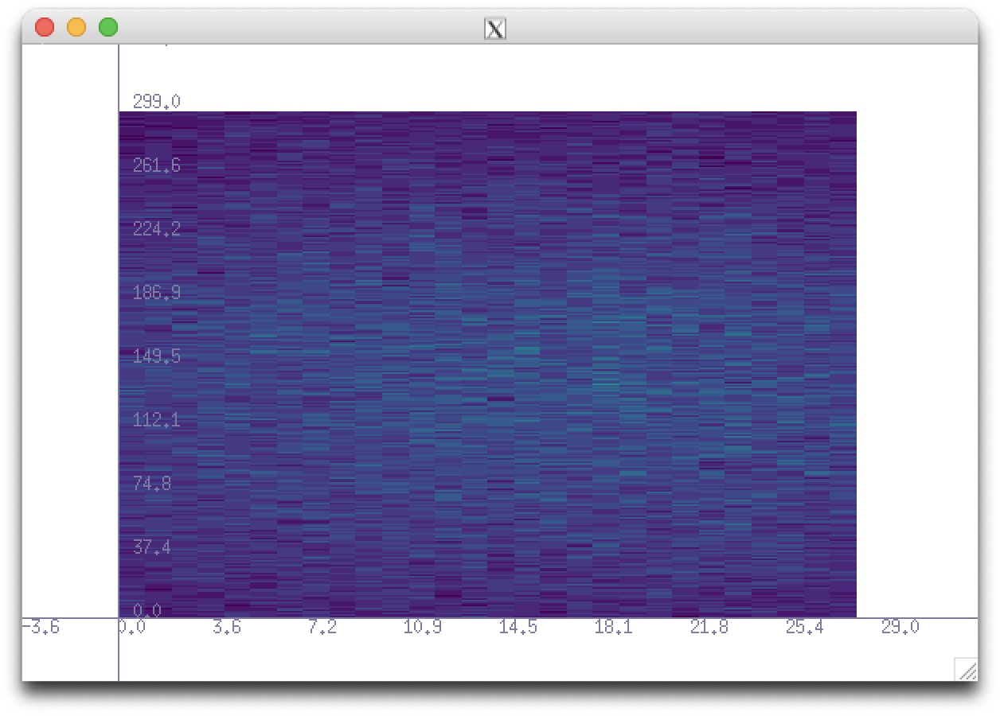
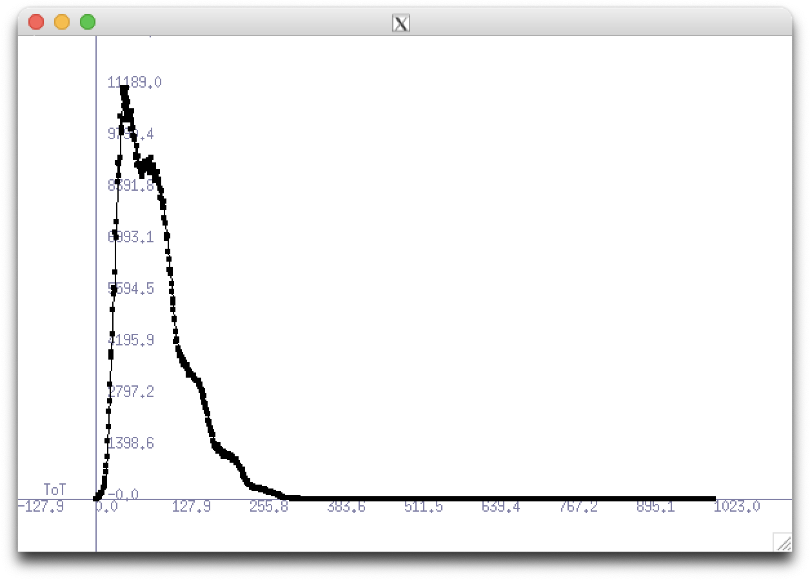
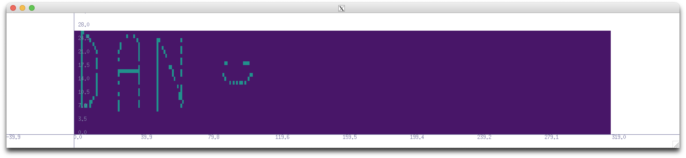

If you have read your full or are not interested, you can go back to the main page.
These are a few selected instances where HistoGUI has been useful in my research as a quick and easy to use GUI. These push forwards the development of new features as I need them and the identification of bugs as I find them!
The MightyPix is a HV-CMOS particle tracking sensor. In order to monitor the live data outputted by this sensor from a GECCO board, I used HistoGUI. To do this, I had to rewrite the refresh function to fill new data. This saves me from installing ROOT (or some other plotting software) on a computer and allows for live hitmaps and ToT distributions. The code is here but is only accessable to those with a CERN login (sorry). Here are some of the plots:


I wanted a GUI to show the various pixels in a TDAC pixel map. I could have made this in ROOT but I thought it would be cool to be able to turn the mask on and off with my mouse... HistoGUI to the resuce! I repurposed the 'Crosshairs' function to turn off and on pixels and was very happy with the result! The code is also here. Here is one of the pixel maps I edited:

Way more excitingly I would love to feature some examples of other poeple using HistoGUI here! Please get in touch with me if you have anything to show - however small it does not matter! :)